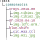

Semantic Web Applications interoperate by sharing semantics of terms and constellations of data structures.
This primer introduces ShapeTrees and describes how Semantic Web Applications use them to consistently interoperate over constellations of data structures organized in resource hierarchies used by protocols such as LDP and Solid.
This is a proposal for the structure and use of ShapeTrees in Solid.
It is possible that this or a derivative document will become a Solid specification.
Introduction
Realizing the value proposition of the Semantic Web lies in building useful and robust applications that can interoperate over linked data.
Protocols such as LDP and Solid organize linked data graphs into resource hierarchies, providing a foundation upon which these robust and interoperable applications can be created.
Application interoperability depends on applications sharing semantics for relationships and data structures.
RDF's foundation in unambiguous identifiers provides an infrastructure that allows for interoperability without specifically encouraging it.
Within a single resource, shapes languages (e.g. ShEx and SHACL) provide machine-readable, enforceable data structure definitions.
For applications that operate on constellations of resources, ShapeTrees express the layout of those resources and associate them with their respective shapes.
ShapeTrees marry RDF vocabularies, shapes, and resources into "little trees" that
provide detailed ShapeTrees for machine to machine interoperability,
while at the same time creating models and representions that humans can
easily comprehend, such as medical records, notes, notebooks,
calendars, and financial records. Consequently, we can use ShapeTrees to provide
data boundaries that machines can interoperate with and humans can understand.
A ShapeTree defines a prospective tree of related resources which can be read and written by applications.
The ShapeTree associates each of these resources with a shape.
This allows one to treat a set of related resources as a single grouping, and apply that to a range of operations including access control, data organization, data validation, and data migration.
Since the ShapeTree boundaries that establish these groupings are easily understood by humans, it allows them to perform these operations intuitively.
ShapeTrees are defined as an RDF graph structure and a set of expected behaviors of agents respecting that graph structure.
These semantics can be implemented by a server, a client-side library, or a privilenged third-party helper application.
Communication, including error reporting, is defined in terms of HTTP; allowing a single definition to define the behaviors for servers, clients and third-party applications.
ShapeTree Structure
The following image introduces ShapeTrees by way of an example ShapeTree for interoperable notes called "CommonNote".
It captures notes, any images included therein, as well as the note's citations.
The example image includes three columns:
- Shape definitions (expressed in ShEx) for the resources described by the CommonNote ShapeTree
- A ShapeTree (expressed in Turtle) for CommonNote
- Example instances of the CommonNote ShapeTree (a "resource hierarchy")
Shapes (ShEx)
ShapeTree (Turtle)
Resources

Here, /data/medicalNotes and /data/astronomy/notes are both plants of the <#container> ShapeTree step.
They are both LDP Containers per <#container> tree:expectsType tree:ShapeTreeContainer and could contain any number of note data instance per tree:contains <#note>.
In this example, xrays-2019-08, GP-2020-04-18 and blue-shift respectively are data instances of the <#note> ShapeTree.
Each contains a binary image and blue-shift has a citation.
A ShapeTree document can contain multiple ShapeTree subjects. A given subject in a ShapeTree resource can be referenced and used on its own as a standalone ShapeTree, or as part of a more connected tree of ShapeTrees.
The ShapeTree describing the citation has the subject node <#citation>.
This ShapeTree asserts that associated resources (e.g. cit-M33.ttl) must be LDP Resources per <#citation> tree:expectsType tree:ShapeTreeResource, must have a name matching a URI template (i.e. must start with "cit-") per <#citation> tree:matchesUriTemplate "cit-{name}", and must conform to the shape <CommonNote#Citation> per <#citation> tree:validatedBy <CommonNote#Citation>.
The above resource hierarchy includes multiple locations where data instances of the ShapeTree CommonNote
<#note>
can be stored (medicalNotes and astronomy/notes).
Many systems make life simpler for users by providing dedicated places to store specific types of data structures.
This provides applications with the ability to store data without prompting the user for a storage target.
The example on the right implies a single location to store all CommonNote <#note> instances.
The resource name for these individual <#note> instances could come from the ShapeTree name, a randomly generated sequence like a uuid, or some other opaque identifier invented by the system.
Validation by the <#container> ShapeTree step ensures that only <#note> instances can be stored.
Instances of <#note> ShapeTrees can be discovered easily in this scheme, and the layout is conducive to tag-based organization and access control.

Should ShapeTree resources include a ShapeTree for their managed container?
In the above ShapeTree, the triples:
<#container> tree:expectsType tree:ShapeTreeContainer ;
tree:contains <#note> .
describe not an instance of a note but a container of such instances.
Without these triples, the outer-most step (the one that is not the object of any tree:contains arcs) is <#note>.
This makes it easier to, at a high-level, assert that the ShapeTree is about Notes rather than containers of notes.
Reasons not to include
- Simplifies message.
- Aligns with traditional patterns for data modeling and separation of concern
- Could either:
- Describe outer container with a second ShapeTree,
- Leave content model of outer container implicit in the existance of any ShapeTree doc (i.e. system automatically creates a container for it).
Reasons to include
- Re-uses existing mechanism (
tree:contains) for declaring a container content model.
This works for homogeneous and heterogeneous (those with multiple types of members)
- avoids either:
- Second ShapeTree,
- Implicit containership semantics.
A ShapeTree is a tree structure of one or more ShapeTree subjects which in turn describes a tree structure of Resources (effectively a hierarchy of containers and resources).
Each ShapeTree can be referenced and used on its own as a standalone ShapeTree. Each container or resource is described by ShapeTree.
A ShapeTree consists of:
- an id: an addressable label for this ShapeTree.
As with all RDF structures, providing an id makes is possible to address this entity from outside the document.
- an expectsType: type of the associated resource:
tree:ShapeTreeContainer, tree:ShapeTreeResource OR tree:ShapeTreeNonRDFResource.
The expectsType specifies whether the associated resources should be a container, a normal resource, or an non-RDF source. ShapeTree implementations
will map these resource types to the appropriate constructs for the intended platform (i.e. in an LDP environment tree:ShapeTreeResource would map to ldp:Resource).
- either of:
- a label: label for a resource which will always be created;
This is used when resources with specific names will appear in the resource hierarchy.
- a matchesUriTemplate: pattern for a resource to be matched against a POSTed Slug: header or a resource name in a PUT/PATCH.
This is used to constrain resource creation based resource name patterns.
- a validatedBy: The RDF graph structure of any POSTed or PUT resource must conform to this shape;
This allows ShapeTrees to ensure that the data in the resource hierarchy conforms to the expected schemas.
- an optional supports: an IRI to another ShapeTree.
This captures a relationship where a ShapeTree is dependent on another for purposes of ancillary tasks like indexing. It is expected to describe resources which extend or another ShapeTree.
- an optional contains: a list of nested ShapeTrees.
This captures the containership of a conforming resource hierarchy. In addition to containing other ShapeTrees, this list may include
tree:AllowNone, tree:AllowAll, tree:AllowContainers, tree:AllowResources, tree:AllowNonRDFSources which described the intended behavior when a resource is created that does not adhere to any matching matchesUriTemplate predicates.
- an optional references: a list of referenced ShapeTrees.
These provide advice that the data in resources described by this ShapeTree references another ShapeTree. This enables connectivity of ShapeTrees
without requiring direct nesting/containment of those relationships.
Annotating all ShapeTrees within a given resource is an optional hasShapeTreeDecoratorIndex: An IRI containing an index of SKOS graphs.
As detailed in Describing Shape Trees below, SKOS provides an extensible means to describe a shape tree in human-readable terms. The tree:hasShapeTreeDecoratorIndex allows shape tree maintainers to provide a reference to SKOS graphs that accurately and reliably describe the shape tree as intended, which is important for authorization use cases.
Planting a ShapeTree
The above example describes an instance at /data/CommonNotes.
This is an LDP Container which is constrained to contain only instances of <CommonNoteShapeTree#note>.
This container is described by the ShapeTree <CommonNoteShapeTree#container>:
<#container> tree:expectsType tree:ShapeTreeContainer ;
tree:contains <#note> .
In order to create this, an application like NeverNote would use a plant operation to create an instance of the <#container> ShapeTree.
This plant operation is a POST to the parent Container with one or more rel="ShapeTree" Link header .
The resulting LDP Container for CommonNotes is expected to be shared with other applications.
Below, we use the name "OtherNote" as an example of another application which can consume and process data conforming to the shapes referenced by the CommonNote ShapeTree.
The response identifies a LDP Container for CommonNotes notes:
HTTP Response
HTTP 201 CREATED
Location: http://pod.example/data/CommonNotes/
Content-type: text/turtle; charset=utf-8
Content-length: 396
Planting a ShapeTree results in a new LDP Container in the resource hierarchy.
Metadata associated with this container describes the planted ShapeTree that manages the contents of the container.
Contents of http://pod.example/data/CommonNotes/ related metadata
@prefix ldp: <http://www.w3.org/ns/ldp#>.
@prefix xsd: <http://www.w3.org/2001/XMLSchema#>.
@prefix tree: <http://www.w3.org/ns/shapetree#>.
@prefix dc: <http://purl.org/dc/terms/>.
@prefix dcterms: <http://purl.org/dc/terms/>.
<>
tree:hasShapeTreeLocator <#bc1b490a-537d-4749-b778-cd7d6da3ac56> .
<#bc1b490a-537d-4749-b778-cd7d6da3ac56>
tree:hasRootShapeTree <http://commonnote.example/CommonNoteShapeTree#container> ;
tree:hasShapeTree <http://commonnote.example/CommonNoteShapeTree#container> ;
tree:hasShapeTreeInstancePath "." ;
tree:hasShapeTreeInstanceRoot </data/CommonNotes/> .
Creating Data Instances
Despite NeverNote having planted the LDP Container /data/CommonNotes, it could be another application, OtherNote, which first creates data there.
When POSTing to any managed Container, there will be a corresponding step in the ShapeTree.
If the step includes a shape, the POST must include a Link: rel="focusNode" header to identify the node in the POSTed data that should conform to that shape.
POST /data/CommonNotes/
Link: <#note1>; rel="focusNode"
PREFIX : <http://nevernote.example/ns#>
PREFIX ldp: <http://www.w3.org/ns/ldp#>
PREFIX xsd: <http://www.w3.org/2001/XMLSchema#>
PREFIX geo: <http://www.opengis.net/ont/geosparql#>
<#note1>
:title "Note1" ;
:content "Don't believe the hype!" ;
:updated "2020-01-01T12:34:00Z"^^xsd:dateTime ;
:tagNames ("tag1" "tag2") .
When an application POSTs to a Managed Container, the ShapeTree-aware agent handling the POST locates the appropriate ShapeTree that is contained,
via the tree:contains predicate, that matches its URI template.
- If the ShapeTree includes a
tree:validatedBy predicate, the POST body is parsed and the focus node is tested for conformance.
- If the posted resource is invalid, it will return with a 422 Unprocessable Entity message.
- If no matching ShapeTree is found, the agent will use any present
tree:Allow* IRIs to determine whether to allow the new resource.
- If the posted resource is valid, the typical LDP processing will create an entity whose contents include the POSTed body.
Describing Shape Trees
To aid in the human-readability of Shape Trees, one or more SKOS graphs can be used to provide a textual representation of the structure.
Making use of the tree:hasShapeTree predicate, labels can be applied to specific Shape Trees using any language.
A SKOS index document allows for discovery of multiple definitions of a Shape Tree supporting multiple language preferences and cognitive abilities.
The convention on how this index of SKOS graphs is structured and used, along with the rules to govern the selection of the appropriate graph for a user is the responsibility of the ecosystem using Shape Trees.
A sample SKOS index document, with references to English and Russian representations of the CommonNotes Shape Tree:
<#index>
a tree:ShapeTreeDecoratorIndex ;
treeIndex:hasSeries <#en>, <#ru> .
<#en>
a tree:ShapeTreeDecoratorSeries ;
tree:hasHierarchy <#en-v1>, <#en-v1.1> .
<#en-v1>
a tree:ShapeTreeDecoratorHierarchy ;
xsd:lang "en" ;
tree:hasVersion "1.0" ;
tree:hasSkosGraph ;
tree:hasSHA3256Hash: "92ac6762c129666107299c2386420fdb31b12df7723b3aa0d132485fda864a47" .
<#en-v1.1>
a tree:ShapeTreeDecoratorHierarchy ;
xsd:lang "en" ;
tree:hasVersion "1.1" ;
tree:hasSkosGraph ;
tree:hasSHA3256Hash: "74a468adf584231d0aa3b3277fd21b13bdf0246832c992701666921c2676ca29" .
<#ru>
a tree:ShapeTreeDecoratorSeries ;
treeIndex:hasHierarchy <#ru-v1> .
<#ru-v1>
a tree:ShapeTreeDecoratorHierarchy ;
xsd:lang "ru" ;
tree:hasVersion "1.0" ;
tree:hasSkosGraph ;
tree:hasSHA3256Hash: "7d8cf659fdbd69618658e043c2c6e8c8e9395f4b652a38c2e5922eb7a51de42c" .
A sample SKOS graph (<#en-v1>), in English, defining the terms in the CommonNotes Shape Tree:
@prefix f: </data/CommonNotesShapeTree#container> .
@prefix tree: <http://www.w3.org/ns/shapetree#> .
@prefix skos: <http://www.w3.org/2004/02/skos/core#> .
@prefix skosxl: <http://www.w3.org/2008/05/skos-xl#> .
<#root> a tree:ShapeTreeLabel ; tree:hasShapeTree f:root ; skosxl:prefLabel [ skosxl:literalForm "Note Container"@en ] ; skos:narrower <#note> .
<#note> a tree:ShapeTreeLabel ; tree:hasShapeTree f:note ; skosxl:prefLabel [ skosxl:literalForm "Text content of a note"@en ] ; skos:narrower <#citation>, <#image> .
<#citation> a tree:ShapeTreeLabel ; tree:hasShapeTree f:citation ; skosxl:prefLabel [ skosxl:literalForm "Citation to another document within a note"@en ] .
<#image> a tree:ShapeTreeLabel ; tree:hasShapeTree f:citation ; skosxl:prefLabel [ skosxl:literalForm "Embedded image or graphic within a note"@en ] .
A sample SKOS graph (<#ru-v1>), in Russian, describing the same CommonNotes Shape Tree:
@prefix f: </data/CommonNotesShapeTree#container> .
@prefix tree: <http://www.w3.org/ns/shapetree#> .
@prefix skos: <http://www.w3.org/2004/02/skos/core#> .
@prefix skosxl: <http://www.w3.org/2008/05/skos-xl#> .
<#root> a tree:ShapeTreeLabel ; tree:hasShapeTree f:root ; skosxl:prefLabel [ skosxl:literalForm "контейнер для заметок"@ru ] ; skos:narrower <#note> .
<#note> a tree:ShapeTreeLabel ; tree:hasShapeTree f:note ; skosxl:prefLabel [ skosxl:literalForm "текстовое содержание заметки"@ru ] ; skos:narrower <#citation>, <#image> .
<#citation> a tree:ShapeTreeLabel ; tree:hasShapeTree f:citation ; skosxl:prefLabel [ skosxl:literalForm "Цитирование другого документа в заметке"@ru ] .
<#image> a tree:ShapeTreeLabel ; tree:hasShapeTree f:citation ; skosxl:prefLabel [ skosxl:literalForm "Встроенное изображение или изображение в заметке"@ru ] .